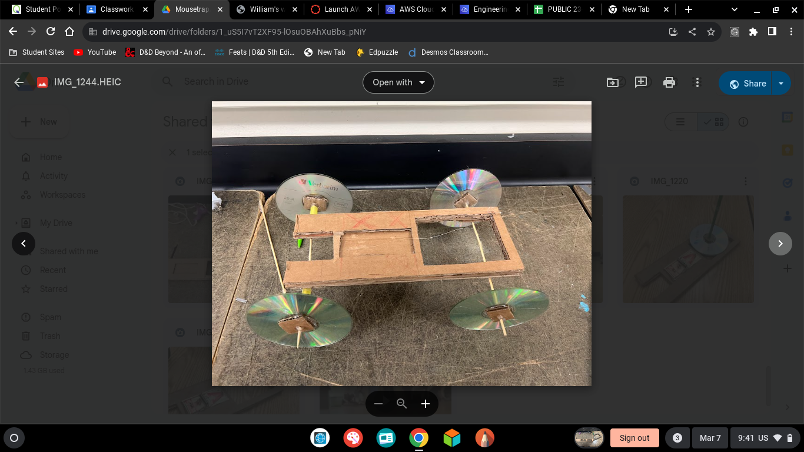
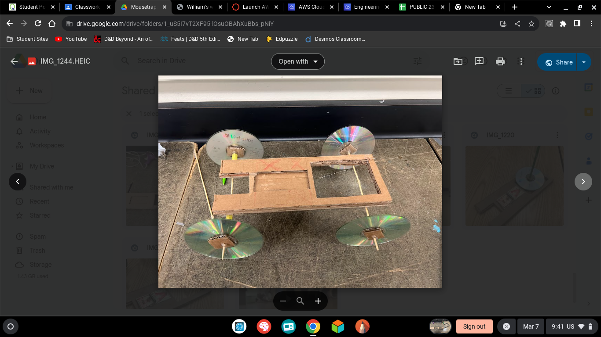
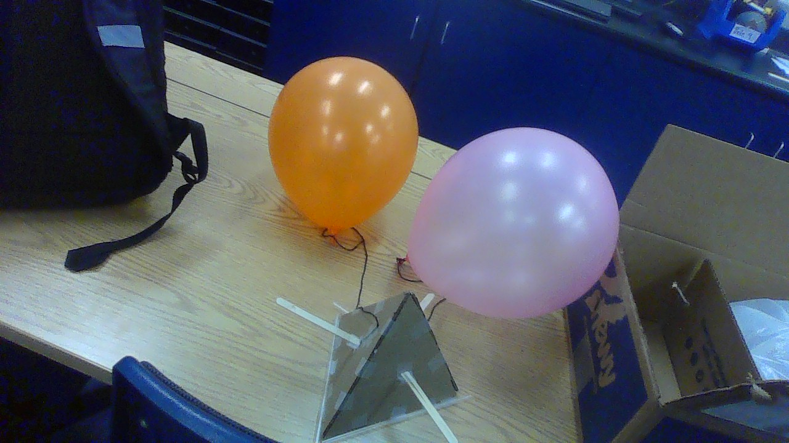
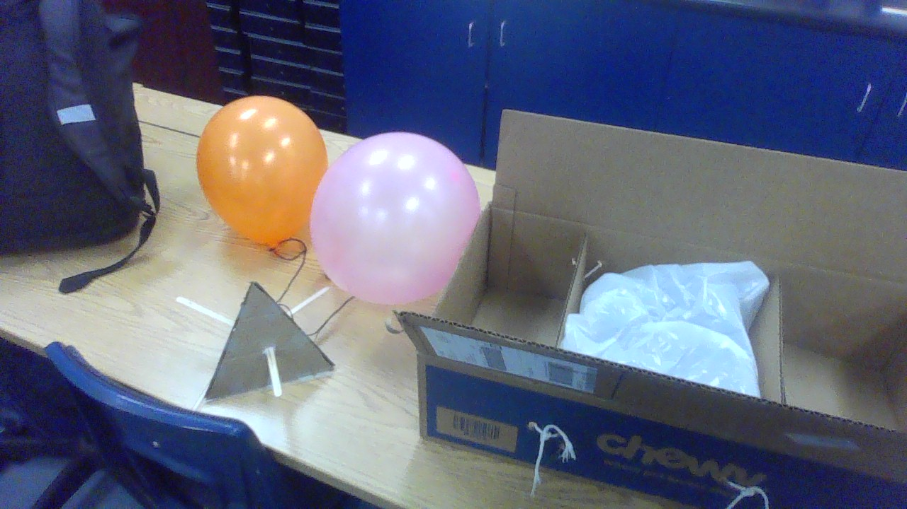
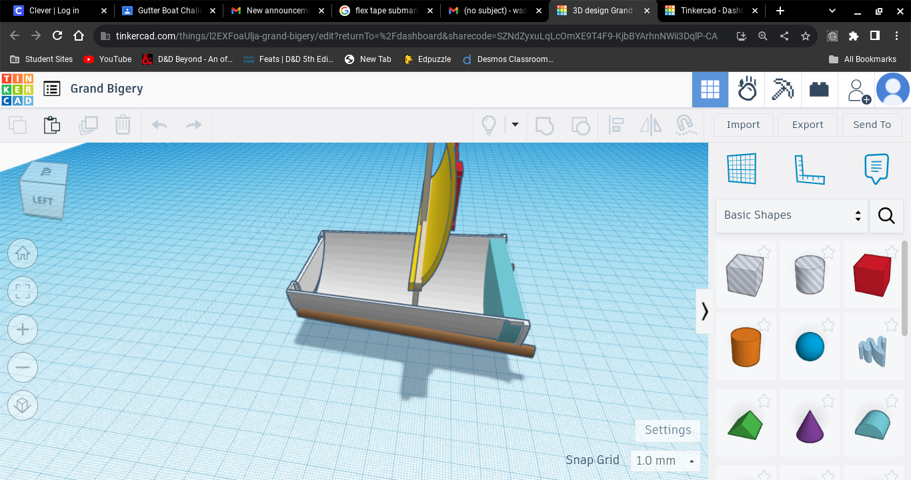
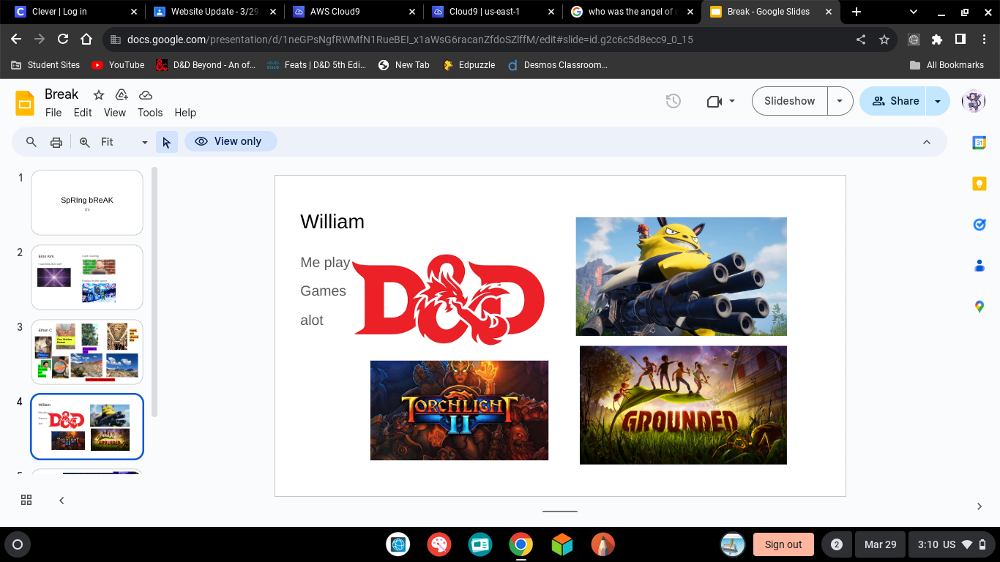
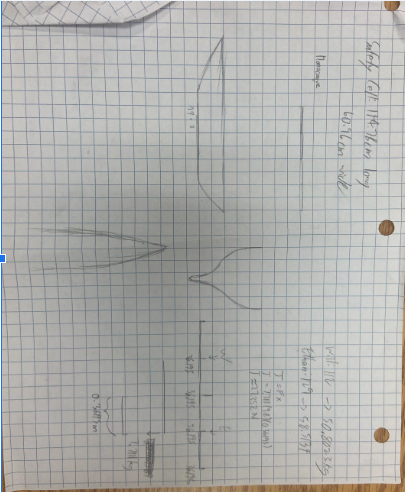

1/26/24- this week we began the car construction project where we began to make either an arduino car or a mousetrap car i began to make a mousetrap car with my nw parnter reza or som as people call him so far its going good we have a few good ideas we will do our bom and finsish our experimenal design and test we have alos found all the eauations we nened to use so we can fully experiment with our car and make sure our desighns will be effetive for our desiered goal of going farther than any and all other mousetrap cars i would alos like to somehow beat one arduino car


well we spent most of our time working to make our first draft of our car so we can check our math and make sure everything works and will make sense so our cars second itearation will work better than evryone elses th goal for this week is to complete car one and begin car two to try and perfect our desighn and be cewl i played lethal company and died alot and had a good time also played dugreed and finsihed the parkour puzzle so yeah


we made a 30 in locng car with intermedite holes in it to reduce weight and to make the car go further we alos made a 17in long rod whcih was used to make our car go its overall length whcih is give or take the whole cafeteria or 55ft our first cars test was used to make sure all math and our ideas were correct which thankfully worked well enough the biggest differnece was size rod length and axel material which gave us our almost double length of our first one if i were to make a third one i would starighten the wheels and add more string to make it go farther and make sure to luanch it corrctly

 

we are maing and working on secreing an egg drop where we can safely drop an egg form a two stry building using a variety of materical indluing but not limted to paper cardboard and of course tape we have foud out their are two ways to secure our egg to eithe rmake the drop safer or our egg safer we have done both we are allowd to bring a box from home whihc our pryamid will drop into where sticks will catch it this should keep our egg safe as it is also surrond by cotton balls which will cushion its fall from the building teh weakest part would be the grabing sticks brekaing mid flight or the ballos popping whcih will be stopped using

we tried to use a few stargeys ut in the end i belived we overenginnered full style over substance we also missed our catching contration which did really affect how well our egg did overall unlike our desighn the starws had oved so the egg landed cold and hard on the pavment causing the egg to shatter apart which lead to it breaking and leaking all over the place like well an egg over the spring break im going to play teh super duper fun game called palworld where i will enslave and force little beings to work and produce moeny guns and ammo for me to go and kill and capture more little aniamls ill also play torchlight im trying to get to max level and im ony 85 ut i did figure out an easy way yo farm
 
its going well so far we expect our boat to go aroud 50% of the overall legth we hope to research more and go maybe 60-70% but there is only a small chance we will manage to go the full length but in an ideal world we would its a medium sized boat with a sail the funnest part of my break was plannign out dnd and playing grounded wtth my pooki ethan i hope to maintain my A
 we had ot make a small boatwithe teh singualr and specif goal of trabeling 500 cm to the end of a thin gutter which was filled with 5-6cm of water and with medium to low windspeeds which heavily effected teh resuls of everyones boat we went around 40cm it didnt do as well as we expected or hoped it woudl thanks to how stiff teh sail was which made it much more diffuclult to blow and travel across thanks to our manul bretahing method the best idea would have bene to make teh sail of a less firm material and make it more suspictable to being blown i also would have liked to better inslute it so water would not have gotten in as easily i liked the bussiness presentaion i had a lot of fun and got a good grade and i think i had a very informative and impresisve presneation and i didnt enjoy the LED breadboard project im going diablo 4 and im going to read my new book called finnegans wake its very goofy and i like it
were making a pretty big bot whcih should be able to hold two epople of differing heghts an dweights and it shoud be able to go their and go back im very worried about it as im one of the two people this weird cardboad things has to hold and ot drop in teh water and kill overall not that bad but still ive got reasosn to worry my fit migt get wet ad soaked an dthat would fucking suck but oh well ill lock in and wont worry too much ill just try and help and work with my team to do my best and make sure i ask my teachers and peers for teheir overall opions and thoughts regarding issues and the thinsg atht they may involve but we also had a chalenge which my team didnt get last in as we made avery veyr very finickey bridge but overall it was fun but thansk to thsi eyar being almost over i get to be exicted baout playig skyblock and playing he numbe rone game of diablo 4 which im so close to being max level in but i think i have around 10 more levels to go so as long as i do some more whisper caches and trees plus if i get lucky with advanced cases and such but i would need more emebers which their is a low chnace i can finish teh battle pass in the time left but y never know
